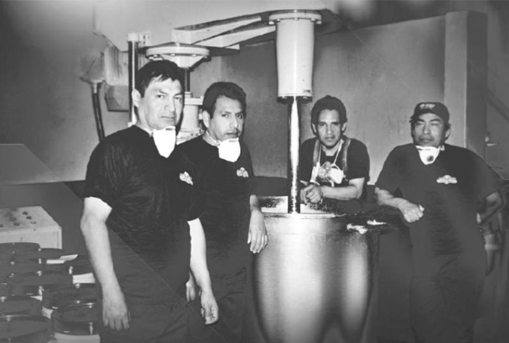

Quitexa Colors S.R. L. es una empresa peruana dedicada a la fabricación de productos e insumos para la industriatextil del mercado peruano e internacional.
Respondemos a las necesidades particulares de nuestros clientes.
Nuestra política es la de calidad del productos, siendo la empresa pionera en el desarrollo de
productos para estampado en nuestro país.
Visión
"Nuestra visión es ser una de las empresas de más reconocidas en la industria textil peruana y a nivel mundial, no sólo reconocidos por nuestra calidad, sino también por nuestro trato hacia nuestros clientes. Además por ser una empresa con conciencia social y ambiental"
Misión
"Nuestra misión, es la de llevar siempre el producto de mejor calidad, buscando las mejores tecnologías para implementar nuestros procesos productivos, mejorar y optimizar la distribución de nuestros productos hacia nuestros clientes"
Historia
Quitexa se origina por los años 90, bajo la idea de lanzar al mercado peruano un producto que pueda satisfacer las necesidades de muchos productores, y confeccionistas, que se veían con pocas opciones en cuanto a productos para estampado textil.El proyecto resultó ser una salida óptima, por la calidad que se busco desde un inicio y fue la principal motivación para la creación del producto, es así como se lanza al mercado el primer copage originario de la empresa, producto que era fundamental para la industria del estampado textil en nuestro país, distribuido en una de las primeras tiendas de la empresa ubicado en gamarra. Bajo el nombre de Magic Colors, que tubo gran acogida por el público y productores de Gamarra, debido a la gran calidad, textura adecuada y al servicio personalizado que se brindaba. El producto se vendía en pequeñas y medianas cantidades, con el tiempo Magic Colors se fue haciendo conocido y la demanda aumento significativamente, se tuvieron que aumentar las presentaciones del producto. Debido a esta demanda, la empresa que estaba en un punto emergente, se vio en la necesidad de ubicarse en un segundo local, y la compra de máquinas necesarias para aumentar los procesos productivos, como batidoras y cilindros, resultado de esta inversión, siguió el aumento de la venta del producto, y se comenzó a trabajar ya en toda la gama de insumos para estampado textil, además la importación del mejor expantex del momento.Desde el inicio siempre se tomo en cuenta las necesidades del cliente, que fue y es el protagonista de la historia de nuestra empresa, la confianza entre la empresa y los clientes ha ido creciendo durante los años desde la creación de la marca hasta la actualidad.
